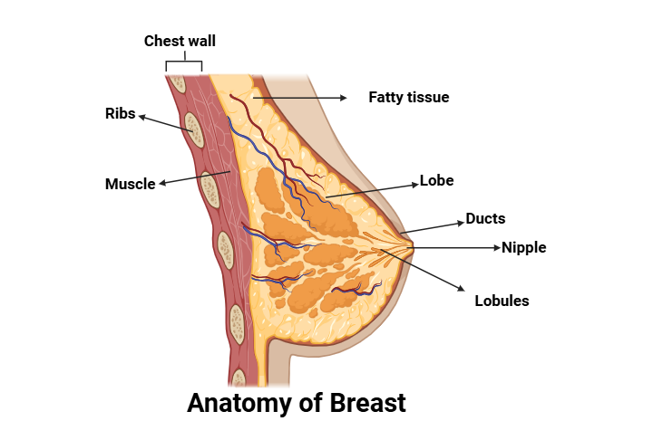

Breast cancer is the second most common cancer in women after skin cancer. Mammograms can detect breast cancer early, possibly before it has spread. Source
Anatomy of the female breast: The nipple and areola are shown on the outside of the breast. The lymph nodes, lobes, lobules, ducts, and other parts of the inside of the breast are also shown.
Each breast also has blood vessels and lymph vessels. The lymph vessels carry an almost colorless, watery fluid called lymph. Lymph vessels carry lymph between lymph nodes. Lymph nodes are small, bean-shaped structures that filter lymph and store white blood cells that help fight infection and disease. Groups of lymph nodes are found near the breast in the axilla (under the arm), above the collarbone, and in the chest.
The breast is made up of lobes and ducts. Each breast has 15 to 20 sections called lobes, which have many smaller sections called lobules. Lobules end in dozens of tiny bulbs that can make milk. The lobes, lobules, and bulbs are linked by thin tubes called ducts. Source
The following are risk factors for breast cancer:
1.Older age
2.A personal history of breast cancer or benign (noncancer) breast disease
3.Inherited risk of breast cancer
4.Dense breast tissue
5.Reproductive history resulting in greater exposure to estrogen
6.Taking hormone therapy for symptoms of menopause
7.Radiation therapy to the breast or chest
8.Obesity
9.Drinking alcoholSource